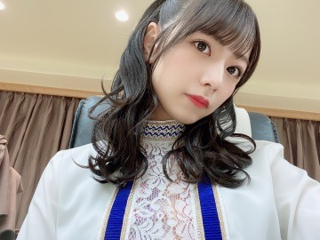

2020/1222Tue一番好きなものを離さないで
みなさまこんばんは
北野日奈子です！

同期で同い年で優しくて強い私の1番のライバルの未央奈が卒業発表をしました
ずっと前から聞いていたけど
初めて聞いた時から寂しいとか嫌だとか
そんなこと未央奈に言えなかったな。。
そうなんだね、そうか～。って返してたと思う。
私もそうする！とはもちろん言わなかったし
なんとなくずっと未央奈のいない二期生の形を想像して、そこにはぽっかり穴が空いてるのを感じているんだろうなって。
二期生の先頭でずっと頑張ってくれて
初めての選抜ではセンターに選ばれて
誰の想像をも超えるほどのいろいろな感情を抱かざるにはいられなかったと思います
誰にもわからないし全部は伝わらないと思います。
本人にしか見えないもの聞こえないものがあって
それを簡単に分かるよ。なんて言えないと思う
向かい風の中必死に立っている未央奈の姿を
テレビで純奈と一緒に見た時は、これが覚悟というものなんだと伝わってきました。
その頃の私にはまだ覚悟が足りてなかったと思います、必死に先輩たちに追いつこうとしている未央奈の姿を見て心が震えました。
グループのことグループ内での自分の立場
なりたい自分像、夢や目標を
しっかり考えてそれが揺らぐことなく
自分の芯にあって、
そんな未央奈の傍にいられたからこそ
私もきっと真っ直ぐに頑張って来れたんだと思う
感謝しているよ
だからこそ、1番の味方でいようと思って
私と未央奈がどれだけ価値観が違くても
性格が合わなくて大きい喧嘩をしたとしてもね
絶対私は味方でいなくてはいけないって心に決めてそれからずっとそうやって何年も何年も活動していました
もし未央奈が皆んなと違う方を選んでそれを離さないで一人で頑張っているのなら
私は迷わず未央奈と同じ方を選んで掴んで離さないと思ってやってたんだよ！
大袈裟に聞こえるかもしれないけど
変な形ではあるのかもしれないけど
味方でいること仲間でいることを
そうやって言葉にして口にすることで
少しでも未央奈が前を向いてくれたらいいと思って昔からずっと一緒に前を向いていました！
私が初めて選抜に選ばれた時は
二人でずっと一緒に過ごしていました。
その頃はまだ緊張ばっかりで、数秒だって離れるなんてできなかったなあ笑
思い出すと本当に色々とありました
笑うツボが同じだから二人でケラケラずっと笑って他の二期生にうるさいよお！って怒られたこともあるしね笑
ふざける時もやりすぎちゃうくらい笑
私の色々な場面でのきっかけにはいつも未央奈がいたと思います。
未央奈のすぐ後ろを走ってその背中を見ていた頃はがむしゃらだったし
未央奈の横顔をみて肩を並べて走っていた時期は未来に期待が溢れて希望を見て楽しかったよね。
私が休業した時はどう感じてたのかな？私は勝手に責任を感じているから、復帰してから今もずっと誰よりも強くあろうとしてるよ！
もう少しだけ同じ時間を過ごせるから
そのもう少しだけの時間でみる色々な景色を同じ気持ちで見られたらいいなって思います
大好きだよ！未央奈！
それから最後の活動が一緒じゃなくてごめんね
違う場所でお互いがみる大好きな乃木坂について
また話そうね、みおが卒業する頃にでも！
こんなおもちゃつけてはしゃいで、
14人の中でも私と未央奈しか
やらないと思うよ笑
アンダーライブが無事におわりました！
座長のたまちゃん、本当にしっかりしていて
隣にいて何の心配もなかったよ！
はじめてのセンターだと思えないほど
その場所が似合っていて風格があって圧倒的オーラでした！大好きなたまちゃんの横で三期生の成長を感じることができて、感動しました！
皆んなそれぞれ自分と何度も向き合って
今ライブをする意味、今ファンの方に私たちの姿をみてもらう意味、今ステージに立たなくてはならない意味を確実に同じ温度の物を共有できていたと思います。
何十公演とアンダーライブのステージに立たせてもらえてその度何か新しいものに出会えていましたが、今回のアンダーライブは目に見えない思いや愛が見えた気がしました。
それが今回のライブで得た新しいものです。
今回のアンダーライブには
何から向き合っていいのかわからなかったのが、最初でした。いつも泣きそうになりながら練習して、こんな気持ちのままやっていたらダメだと思いながら鏡に映る自分の姿をみることができなくて、何がダメなんだろうとか、なにをしたらいいんだろうとか自分の事がわからなくなっていたけど、今の私を見てくれている家族が友達がファンの方が、そのままの私が好きだと言ってくれるから、私は私が好きなみんなを幸せにしたいんだと気づきました。
どこにいてもやるべきことは同じだ、わかっていても心が折れる時もあって
でも揺らぐことのない大事なことをいつでも心に留めておけば
また頑張るために立ち上がれるから
この先きっと皆んなそれぞれに色々なことが起きるかもしれないけど、私は誰かのためにみんなのために皆んなと心を通わせたいと思いました。
大変な世界で大変な思いをしている中、私たちの努力を見にきてくれたみなさんに本当に感謝しています。ちまも言っていた今最大限に楽しめるベストな形での最高な時間だったと思います！私たちを見つけてくれてありがとうございます、私たちから目を離さないで見続けてくれてありがとうございます
たまが言ってくれてた
最強の14人です
2020/12/22 16:00
コメント(1779)
きいちゃん、キュンです！2期生ライブお疲れ様でした！！！！今まで見た中で1番感動して最高のライブだったよ アナスターシャで始まり、アナスターシャで終わるという最高のセトリだった！きいちゃんが所々で泣いているのを見て、めっちゃもらい泣きしちゃった！特に最後のアナスターシャでの泣き崩れるところは本当に感動した！そして、1期3期4期がサプライズで来てくれたところはもう涙が止まらんかった笑。全世界の老若男女誰もが見ても最高で最強のライブだったよ！本当にお疲れ様！未央奈は乃木坂を辞めて新たな道に進むけど、きいちゃんも負けないくらいこれからの乃木坂を引っ張っていってね！やっぱ2期生って最高だよ❗これからもたくさんの夢と希望を見させてください
いつでもどこでもきいちゃんの味方です！大好きです❗
ｐｓ 本当に最高でした
いつでもどこでもきいちゃんの味方です！大好きです❗
ｐｓ 本当に最高でした
(っ'-')╮ =͟͟͞͞ ☺︎ﾌﾞｫﾝ
きいちゃんこんにちは！
まずは遅くなってしまいましたが、二期生8周年おめでとうございます！
いつの間にか二期生のみんなの活動を半分以上観てきていることに驚きました。これからも乃木坂から、二期生みんなから、きいちゃんから目を逸らさずに、ずっと応援していきます！
今週は夢のような一週間であっという間に過ぎていきました。
二期生ライブを控えてふわふわした気持ちで、久しぶりにきいちゃんのグラビアや歌番組を堪能させていただきました。
マガジンのグラビア、とっても素敵でした！お手紙で感想書きますね。
久しぶりの帰り道とSing Out!も最高でした！どちらも大好きな曲なので、きいちゃんがいてテレビで披露できていることが嬉しかったです。二期生もいっぱい一緒で、楽屋はさぞにぎやかで楽しかったことだろうな、と想像しています。みんな見る度に表現力に磨きがかかっていて、これからも応援していきたいな、という気持ちが大きくなりました。
二期生配信もずっと笑ってました！やっぱり二期生が揃ったときの唯一無二のこの空気感が大好きだな、と改めて思いました。この前のミーグリで突然二期生モノマネをきいちゃんに振られたとき本当にテンパってしまったので、まいちゅんの気持ちが痛い程よくわかりました笑
そして、待望の二期生ライブ。本当に素敵な時間でした。詳しくはお手紙に書こうと思いますが、まずはありがとうございます、と伝えさせていただきます。
きいちゃんから未央奈ちゃんへ贈った言葉が、僕が未央奈ちゃんに感謝していることを綺麗に言葉にしてくれていて、同じ気持ちでいられたこと、みんなが未央奈ちゃんにそうして感謝していることが実感できて心が温かくなりました。まだ気持ちを整理するのは難しいですが、今まで生きてきた中で一番の思い出になりましたよ！最高で最強な二期生のみんなが大大大好きです！！
直後の乃木坂工事中もずっとおもしろくてお腹が痛くなるくらい笑ってしまいました笑
ライブのアフター配信でもあったサイコキネシス間奏のアドリブダンスが本当にシュールで何度も観てしまいます笑
本当に二期生が集まると最強だな、と何度も思わされた一週間でした。二期生のみんなに、きいちゃんに出会えて本当によかった。これからも全力で応援していきます！！
それでは、身体も心もお疲れかと思いますので、ゆっくり休んで、もし休めないようであれば無理しすぎないように、お仕事楽しんでくださいね。いつも本当にありがとう、大好きです！
まずは遅くなってしまいましたが、二期生8周年おめでとうございます！
いつの間にか二期生のみんなの活動を半分以上観てきていることに驚きました。これからも乃木坂から、二期生みんなから、きいちゃんから目を逸らさずに、ずっと応援していきます！
今週は夢のような一週間であっという間に過ぎていきました。
二期生ライブを控えてふわふわした気持ちで、久しぶりにきいちゃんのグラビアや歌番組を堪能させていただきました。
マガジンのグラビア、とっても素敵でした！お手紙で感想書きますね。
久しぶりの帰り道とSing Out!も最高でした！どちらも大好きな曲なので、きいちゃんがいてテレビで披露できていることが嬉しかったです。二期生もいっぱい一緒で、楽屋はさぞにぎやかで楽しかったことだろうな、と想像しています。みんな見る度に表現力に磨きがかかっていて、これからも応援していきたいな、という気持ちが大きくなりました。
二期生配信もずっと笑ってました！やっぱり二期生が揃ったときの唯一無二のこの空気感が大好きだな、と改めて思いました。この前のミーグリで突然二期生モノマネをきいちゃんに振られたとき本当にテンパってしまったので、まいちゅんの気持ちが痛い程よくわかりました笑
そして、待望の二期生ライブ。本当に素敵な時間でした。詳しくはお手紙に書こうと思いますが、まずはありがとうございます、と伝えさせていただきます。
きいちゃんから未央奈ちゃんへ贈った言葉が、僕が未央奈ちゃんに感謝していることを綺麗に言葉にしてくれていて、同じ気持ちでいられたこと、みんなが未央奈ちゃんにそうして感謝していることが実感できて心が温かくなりました。まだ気持ちを整理するのは難しいですが、今まで生きてきた中で一番の思い出になりましたよ！最高で最強な二期生のみんなが大大大好きです！！
直後の乃木坂工事中もずっとおもしろくてお腹が痛くなるくらい笑ってしまいました笑
ライブのアフター配信でもあったサイコキネシス間奏のアドリブダンスが本当にシュールで何度も観てしまいます笑
本当に二期生が集まると最強だな、と何度も思わされた一週間でした。二期生のみんなに、きいちゃんに出会えて本当によかった。これからも全力で応援していきます！！
それでは、身体も心もお疲れかと思いますので、ゆっくり休んで、もし休めないようであれば無理しすぎないように、お仕事楽しんでくださいね。いつも本当にありがとう、大好きです！
きいちゃん こんにちは！
2期生結成8周年おめでとうございます。
2期生LIVE観させて頂きました。
幻の2期生LIVEとなってから待ちに待った今回のLIVEに感動しました。
やはり2期生！
配信ではありましたがみんなの熱い思い、伝わってきました。
2期生全員センター企画
「日常」の前のスピーチ、そして熱いパフォーマンス、キメ顔、良かったです。やっぱり「日常」大好きです。
ゴルゴンゾーラも別れ際も嫉妬も2期生全員での君に贈る花がないもかき氷も…
堀ちゃんとはラスト！１曲１曲全てが観ていて熱くなってしまいました(T.T)
LIVE、乃木中2nd GENERATION HOUSEでもサイコキネシスの可能性の堀ちゃんの振りダンスは2期生ならではですね。微笑ましかったです(^^)
今回、アナスターシャからはじまりアナスターシャで終わる堀ちゃん卒業2期生LIVE素晴らしかったです。
ありがとうございました。
ところで、きいちゃんの膝のテーピング！Afterでさらに大判になっていたし、心配になってしまいましたが大丈夫ですか？
連日の活動による疲れもあると思います。
ゆっくり休養取って下さい。
またきいちゃんスマイルに会えるのを楽しみにしています。
のりのすけ
2期生結成8周年おめでとうございます。
2期生LIVE観させて頂きました。
幻の2期生LIVEとなってから待ちに待った今回のLIVEに感動しました。
やはり2期生！
配信ではありましたがみんなの熱い思い、伝わってきました。
2期生全員センター企画
「日常」の前のスピーチ、そして熱いパフォーマンス、キメ顔、良かったです。やっぱり「日常」大好きです。
ゴルゴンゾーラも別れ際も嫉妬も2期生全員での君に贈る花がないもかき氷も…
堀ちゃんとはラスト！１曲１曲全てが観ていて熱くなってしまいました(T.T)
LIVE、乃木中2nd GENERATION HOUSEでもサイコキネシスの可能性の堀ちゃんの振りダンスは2期生ならではですね。微笑ましかったです(^^)
今回、アナスターシャからはじまりアナスターシャで終わる堀ちゃん卒業2期生LIVE素晴らしかったです。
ありがとうございました。
ところで、きいちゃんの膝のテーピング！Afterでさらに大判になっていたし、心配になってしまいましたが大丈夫ですか？
連日の活動による疲れもあると思います。
ゆっくり休養取って下さい。
またきいちゃんスマイルに会えるのを楽しみにしています。
のりのすけ
昨日の2期生ライブ最っ高でしたね〜❗️
お疲れ様です。こんばんはぁ
これだけは言いたかったので！
乃木坂工事中の日奈子ちゃんかわいいかったよ！
Love
これだけは言いたかったので！
乃木坂工事中の日奈子ちゃんかわいいかったよ！
Love
きいちゃん、キュンです！まだ2期生ライブの余韻が残ってるよー もうほんとに最高だったよ❗これが円盤化されたら絶対買うし、周りの友達にも買わせて2期生の良さを全力でアピールします！！！まじんこお疲れ様でした！
乃木坂工事中、、、、、最高やないかい 2期生の良さが全部全部全部詰まってた❗これが地上波で流れたということは、これからもっともっともっと乃木坂に、そして2期生に興味を持ってくれるんではないでしょうか❗きいちゃんはいつでもどこでも明るくて笑顔で、その場の雰囲気がほんとに良くなってる気がする！やっぱ乃木坂には欠かせない最高の人です！！ライブと乃木中見て、さらにさらにさらに乃木坂、そして2期生がすきになりました！本当にありがとね！やっぱ乃木坂だな❗
いつでもどこでもきいちゃんの味方です！大好きです❗
ｐｓ 最高の推しに出逢えて幸せです
乃木坂工事中、、、、、最高やないかい 2期生の良さが全部全部全部詰まってた❗これが地上波で流れたということは、これからもっともっともっと乃木坂に、そして2期生に興味を持ってくれるんではないでしょうか❗きいちゃんはいつでもどこでも明るくて笑顔で、その場の雰囲気がほんとに良くなってる気がする！やっぱ乃木坂には欠かせない最高の人です！！ライブと乃木中見て、さらにさらにさらに乃木坂、そして2期生がすきになりました！本当にありがとね！やっぱ乃木坂だな❗
いつでもどこでもきいちゃんの味方です！大好きです❗
ｐｓ 最高の推しに出逢えて幸せです
2期生ライブ
お疲れ様でした！！
ライバルの卒業
いつかは来る旅立ち
でも
念願の2期生ライブ
配信という形だったけれど
皆の熱い想いはしっかり伝わってきましたよ
パフォーマンスも、トークもね(^^♪
これからも、ファイトです(^^)/
お疲れ様でした！！
ライバルの卒業
いつかは来る旅立ち
でも
念願の2期生ライブ
配信という形だったけれど
皆の熱い想いはしっかり伝わってきましたよ
パフォーマンスも、トークもね(^^♪
これからも、ファイトです(^^)/
きいちゃん、おはようございます。
あと少しで４月になり仕事や学校など新年度となる時期で、また新たな気持ちになる時期だと思います。きいちゃん、今日、新聞の日刊スポーツさんに２期生ライブ、1期生ライブについての内容とメンバー皆さんの写真が掲載されていて写真が素敵だと思いました。新聞に掲載嬉しかったです。
きいちゃん、今日も良い１日をお過ごしください。
あと少しで４月になり仕事や学校など新年度となる時期で、また新たな気持ちになる時期だと思います。きいちゃん、今日、新聞の日刊スポーツさんに２期生ライブ、1期生ライブについての内容とメンバー皆さんの写真が掲載されていて写真が素敵だと思いました。新聞に掲載嬉しかったです。
きいちゃん、今日も良い１日をお過ごしください。
楽しみになるね！
仲良しでめちゃ楽しそうな写真だ！
笑顔にしてあげれる瞬間の良い写真だ！
こういう瞬間って好き
これからの堀北コンビも素敵な関係が
続いていくと思うと嬉しいです
これからも二期生を色々な形で
応援していくよ！
永遠に二期生！
ライブお疲れ様でした。
日奈子ちゃんウィークは楽しかったから
その分ゆっくり体休めてね！
#hinakomail
仲良しでめちゃ楽しそうな写真だ！
笑顔にしてあげれる瞬間の良い写真だ！
こういう瞬間って好き
これからの堀北コンビも素敵な関係が
続いていくと思うと嬉しいです
これからも二期生を色々な形で
応援していくよ！
永遠に二期生！
ライブお疲れ様でした。
日奈子ちゃんウィークは楽しかったから
その分ゆっくり体休めてね！
#hinakomail
9thバスラ2期生ライブ観ました。
未央奈卒業もあって涙の多いライブではあったけど、かっこいいとこも顔が綻んでるとこも見せてくれて楽しいライブでした。
2期生全員がアンダーだった「嫉妬の権利」を歌ったあとその表題曲の「今誰」を歌ったのは、ちょっとした意地みたいなものを感じたなぁ。
アンコールの「アナスターシャ」がフルで来て喜んだのもつかの間、セットの裏から他期メンバーが出てくるのが見えて目頭が熱くなっちゃったよ。
ああいうサプライズあるだろうなとは思ってたけど、タイミングがエモすぎる泣
アフター配信で「サイコキネシス」歌ったのは乃木中への振りだったのか笑
そしてその乃木中めちゃ面白かったわ。
2期生ハウスは、乃木どこ時代に8thシングルの選抜メンバーが列ごとに食事会ってのをやったのを思い出したよ。
あの頃もそうだったけどみんな個性的で見てて飽きない笑
同期だとそれが特に強くでるのかな。
ラケットボールリレー簡単そうだけどなんであんなに難しいのかな？
クリアしたのはバナナマンのおかげだね笑
未央奈卒業もあって涙の多いライブではあったけど、かっこいいとこも顔が綻んでるとこも見せてくれて楽しいライブでした。
2期生全員がアンダーだった「嫉妬の権利」を歌ったあとその表題曲の「今誰」を歌ったのは、ちょっとした意地みたいなものを感じたなぁ。
アンコールの「アナスターシャ」がフルで来て喜んだのもつかの間、セットの裏から他期メンバーが出てくるのが見えて目頭が熱くなっちゃったよ。
ああいうサプライズあるだろうなとは思ってたけど、タイミングがエモすぎる泣
アフター配信で「サイコキネシス」歌ったのは乃木中への振りだったのか笑
そしてその乃木中めちゃ面白かったわ。
2期生ハウスは、乃木どこ時代に8thシングルの選抜メンバーが列ごとに食事会ってのをやったのを思い出したよ。
あの頃もそうだったけどみんな個性的で見てて飽きない笑
同期だとそれが特に強くでるのかな。
ラケットボールリレー簡単そうだけどなんであんなに難しいのかな？
クリアしたのはバナナマンのおかげだね笑
やあ、おはようきいちゃん。元気ですか？(*´∀｀)ﾉ
２期生ライブお疲れ様でした。見てたよ。本当に素晴らしいライブだったね。( ´∀｀ )b
もちろん、堀ちゃん卒業がメインだったのだけど。全員センターの時にメンバーが活動に対する思いの丈を各々熱く語ってて感動したよ。だから、全員が主役、みんなで２期生って印象を受けたよ。
きいちゃんのことで言えば、ずっと楽しそうにパフォーマンスしてたのが見てて微笑ましかった。日常の最後のキメ顔も笑顔でちょっとビックリした。
本編ライブはアナスターシャで始まりアナスターシャで締めくくるというまさかの展開。そしてラストのアナスターシャで他のメンバーたちが駆けつけるという展開には胸が熱くなったよ。やっぱ乃木坂だな！って心の中でつぶやいたよ。
素晴らしいライブをありがとうね。いつかまた、２期生ライブ行われるのを楽しみにしてるね。(*^^*)
それじゃまたね。今日も良い１日をね。体調に気をつけて無理なく暖かくして過ごしてね。応援してるよ。＼(^o^)／
２期生ライブお疲れ様でした。見てたよ。本当に素晴らしいライブだったね。( ´∀｀ )b
もちろん、堀ちゃん卒業がメインだったのだけど。全員センターの時にメンバーが活動に対する思いの丈を各々熱く語ってて感動したよ。だから、全員が主役、みんなで２期生って印象を受けたよ。
きいちゃんのことで言えば、ずっと楽しそうにパフォーマンスしてたのが見てて微笑ましかった。日常の最後のキメ顔も笑顔でちょっとビックリした。
本編ライブはアナスターシャで始まりアナスターシャで締めくくるというまさかの展開。そしてラストのアナスターシャで他のメンバーたちが駆けつけるという展開には胸が熱くなったよ。やっぱ乃木坂だな！って心の中でつぶやいたよ。
素晴らしいライブをありがとうね。いつかまた、２期生ライブ行われるのを楽しみにしてるね。(*^^*)
それじゃまたね。今日も良い１日をね。体調に気をつけて無理なく暖かくして過ごしてね。応援してるよ。＼(^o^)／
今日は日中結構暑かったね
きぃちゃん好きだ〜！
きいちゃんこんばんは
長文ですみません
2期生ライブからもう2日経ったね
先々週からSHOWROOMや番組で2期生のみんなをいっぱい観れて、本当に本当に本当に幸せの時間でした。
土曜日の2期生8人だけももちろん観ました！
2期生がワイワイしてる時が大好きです
みんなが本当に個性的で、みんなが最高でした。
そして日曜日の念願の2期生ライブ
正直言って私が乃木坂ファンになってまだ一年ちょっと
去年日本に留学しに来た時から好きになりました。
今までの8年間なぜみんなのこと知らなかったのってすごく悔しいです。
後悔しても時間は巻き戻せないので、今を楽しむしかないと思って
今回のライブ本当にすごく楽しみにしました！
観終わった感想は、みり愛が言った通りマジで宇宙の中心だろう！！と思うくらい最高でした
推し時間はそんなに長くないが、心から2期生のみんなが大好きです。
ライブ中何度も感動して涙が勝手に出ました
今まで観たライブの中で本当にダントツ1番です！！
本当にありがとうございました、そしてお疲れ様でした❤️
最後に工事中の2期生ちゃん達
久しぶりにスタジオの2期生が観れて嬉しかったなぁ
30分間めちゃくちゃ楽しんでました。
特に2期生ハウス、それは本当に最高で尊いなと思いました。
ぜひDVDとか出してください
一生観れるいい映像です♪
とにかく、きいちゃん大好きです！2期生大好きです❤️
これからも応援します
長文ですみません
2期生ライブからもう2日経ったね
先々週からSHOWROOMや番組で2期生のみんなをいっぱい観れて、本当に本当に本当に幸せの時間でした。
土曜日の2期生8人だけももちろん観ました！
2期生がワイワイしてる時が大好きです
みんなが本当に個性的で、みんなが最高でした。
そして日曜日の念願の2期生ライブ
正直言って私が乃木坂ファンになってまだ一年ちょっと
去年日本に留学しに来た時から好きになりました。
今までの8年間なぜみんなのこと知らなかったのってすごく悔しいです。
後悔しても時間は巻き戻せないので、今を楽しむしかないと思って
今回のライブ本当にすごく楽しみにしました！
観終わった感想は、みり愛が言った通りマジで宇宙の中心だろう！！と思うくらい最高でした
推し時間はそんなに長くないが、心から2期生のみんなが大好きです。
ライブ中何度も感動して涙が勝手に出ました
今まで観たライブの中で本当にダントツ1番です！！
本当にありがとうございました、そしてお疲れ様でした❤️
最後に工事中の2期生ちゃん達
久しぶりにスタジオの2期生が観れて嬉しかったなぁ
30分間めちゃくちゃ楽しんでました。
特に2期生ハウス、それは本当に最高で尊いなと思いました。
ぜひDVDとか出してください
一生観れるいい映像です♪
とにかく、きいちゃん大好きです！2期生大好きです❤️
これからも応援します
日奈子ちゃんこんばんは！☺︎
アフター配信の感想伝えて忘れてたから、感想書くね！感動的なライブ本編ラストとは対照的で、たくさん笑った楽しい時間だった！この時間が永遠に続いたらいいのにな〜って思ってた！アンダーライブの時もそうだけど、アフター配信になるとテンションがすっごく上がってる日奈子ちゃん可愛かった せっかちなかたつむり2期生ライブで見たいなって思ってたから、アフター配信だけど見られて嬉しかった
せっかちなかたつむり2期生ライブで見たいなって思ってたから、アフター配信だけど見られて嬉しかった 画面の前でたくさんコールしたよ
画面の前でたくさんコールしたよ
乃木中の2期生企画も見たよ〜
めっちゃ面白かったよ！！2期生HOUSEすっごい楽しそうで仲の良さが伝わってきた！どこかで全部映像流してほしいなあ！日奈子ちゃん冷蔵庫足で閉めるの見ちゃったよ〜(￣∇￣)私もついついしちゃうから気をつけないとね(笑)
モバメありがとう！（＾Ｏ＾）
堀北コンビは永遠、これからの2人の未来が楽しみ
日奈子ちゃん大好き！❤︎
アフター配信の感想伝えて忘れてたから、感想書くね！感動的なライブ本編ラストとは対照的で、たくさん笑った楽しい時間だった！この時間が永遠に続いたらいいのにな〜って思ってた！アンダーライブの時もそうだけど、アフター配信になるとテンションがすっごく上がってる日奈子ちゃん可愛かった
乃木中の2期生企画も見たよ〜
めっちゃ面白かったよ！！2期生HOUSEすっごい楽しそうで仲の良さが伝わってきた！どこかで全部映像流してほしいなあ！日奈子ちゃん冷蔵庫足で閉めるの見ちゃったよ〜(￣∇￣)私もついついしちゃうから気をつけないとね(笑)
モバメありがとう！（＾Ｏ＾）
堀北コンビは永遠、これからの2人の未来が楽しみ
日奈子ちゃん大好き！❤︎
２期生ライブ、乃木坂工事中の放送をみて、２期生皆さんの絆や関係性は素敵だと思いました。
乃木坂工事中は２期生ハウスで料理やカラオケやダンスをしたり、堀未央奈さんへの一言、堀さんアドリブダンスで２期生皆さんでシンクロをしたりと楽しく見ました。きいちゃん、番組では、ガサツ北野、自由人北野日奈子と紹介されてクスッとなったけど、そんな可愛いらしいきいちゃん好きです。スタジオでは、ラケットボールリレーが成功して良かったと思いました。きいちゃん、楽しい時間をありがとう。
きいちゃんと堀未央奈さんのコンビ、堀北コンビは好きです。きいちゃんと堀未央奈さんが楽しそうにしていたりする所は微笑ましいです。今後、きいちゃんが堀未央奈さんと一緒にお仕事をしたりして、写真や番組などでまた堀北コンビが見れたらいいなと思います。
きいちゃん、今日も１日お疲れ様でした。
乃木坂工事中は２期生ハウスで料理やカラオケやダンスをしたり、堀未央奈さんへの一言、堀さんアドリブダンスで２期生皆さんでシンクロをしたりと楽しく見ました。きいちゃん、番組では、ガサツ北野、自由人北野日奈子と紹介されてクスッとなったけど、そんな可愛いらしいきいちゃん好きです。スタジオでは、ラケットボールリレーが成功して良かったと思いました。きいちゃん、楽しい時間をありがとう。
きいちゃんと堀未央奈さんのコンビ、堀北コンビは好きです。きいちゃんと堀未央奈さんが楽しそうにしていたりする所は微笑ましいです。今後、きいちゃんが堀未央奈さんと一緒にお仕事をしたりして、写真や番組などでまた堀北コンビが見れたらいいなと思います。
きいちゃん、今日も１日お疲れ様でした。
きいちゃん、二期生ライブお疲れ様でした！
とっても素敵なライブでした。
スタートから泣いてしまいましたが、セトリも完璧で楽しめました。
センター企画の日常も、また違った感じで凄かったです！
まいちゅんが念願のパフォーマンス出来て良かったです！笑
散々、感動させてくれて泣かせてからのアフター配信には、やられました！
本当に二期生最高！
今回のライブでも、生誕委員会から祝花を贈らせてもらいました！
今回は、アナスタシアの花を８人分８色でまとめてもらいました！
見てもらえたかな？
これからも、きいちゃん、二期生の活動楽しみにしてますね！
とっても素敵なライブでした。
スタートから泣いてしまいましたが、セトリも完璧で楽しめました。
センター企画の日常も、また違った感じで凄かったです！
まいちゅんが念願のパフォーマンス出来て良かったです！笑
散々、感動させてくれて泣かせてからのアフター配信には、やられました！
本当に二期生最高！
今回のライブでも、生誕委員会から祝花を贈らせてもらいました！
今回は、アナスタシアの花を８人分８色でまとめてもらいました！
見てもらえたかな？
これからも、きいちゃん、二期生の活動楽しみにしてますね！
日奈子ちゃんおはよう、モバメありがとう。2期生の絆、未央奈ちゃんとの絆、これからの皆さんの将来に絶対好影響を与えますよね。偶然同期に選ばれた出会い、縁からこの様な仲間が得られるなんて。自分も見習って出会いを大切にしないとと考えさせられます。2期生の皆さんは人柄が良いからな〜なかなかこういう関係性作るの難しいですよね。
きいちゃんおはよう！
昨日は#hinakomailで素敵な写真をありがとう。心が温かくなりました。
#堀北コンビ、本当に大好きです。2人だけの唯一無二の関係。2人だからこその距離感が大好きです。
未央奈ちゃんが卒業しても堀北コンビや2期生から抜けるわけじゃないですもんね、乃木坂2期生も堀北コンビも永久に不滅です！僕もこれからの活躍を楽しみにしています！
昨日雑誌を読んでいたら田村真佑ちゃんがインタビューできいちゃんの話をしてましたよ〜！
「日常の表現力が素晴らしく、表情で魅せる北野さんのようなパフォーマンスを私もできるようになりたいです」とのことでした！
たしかにきいちゃんの日常はどんどん進化と変化を遂げていて毎回驚かされてばかりです。2期生ライブでの笑顔の日常にはキメ顔よりも鳥肌が立ちました。やっぱりきいちゃんは最強にかっこいい大好きな人です！
それでは、今日も一日楽しんでいきましょう！
昨日は#hinakomailで素敵な写真をありがとう。心が温かくなりました。
#堀北コンビ、本当に大好きです。2人だけの唯一無二の関係。2人だからこその距離感が大好きです。
未央奈ちゃんが卒業しても堀北コンビや2期生から抜けるわけじゃないですもんね、乃木坂2期生も堀北コンビも永久に不滅です！僕もこれからの活躍を楽しみにしています！
昨日雑誌を読んでいたら田村真佑ちゃんがインタビューできいちゃんの話をしてましたよ〜！
「日常の表現力が素晴らしく、表情で魅せる北野さんのようなパフォーマンスを私もできるようになりたいです」とのことでした！
たしかにきいちゃんの日常はどんどん進化と変化を遂げていて毎回驚かされてばかりです。2期生ライブでの笑顔の日常にはキメ顔よりも鳥肌が立ちました。やっぱりきいちゃんは最強にかっこいい大好きな人です！
それでは、今日も一日楽しんでいきましょう！
日奈子ちゃんこんにちは！☺︎
今日オールナイトニッポン出るんだね
嬉しい！！バイト頑張れる！！
2期生ライブのお話たくさん聞けるといいな〜！楽しみにしてる！！
また感想コメントするね〜！
日奈子ちゃん大好き！❤︎
今日オールナイトニッポン出るんだね
嬉しい！！バイト頑張れる！！
2期生ライブのお話たくさん聞けるといいな〜！楽しみにしてる！！
また感想コメントするね〜！
日奈子ちゃん大好き！❤︎
きいちゃん、ライブお疲れ様でした。
やっぱり2期生は北野日奈子がいなければならない、と強く思いました。きいの天真さが、2期生の光です。
これからも応援します。ライブのときのテーピングがどうしても気になってしまったけれど、大丈夫でしたか？無理せず、ゆっくり休んでね。今日のオールナイトニッポン、楽しみにしてます！
やっぱり2期生は北野日奈子がいなければならない、と強く思いました。きいの天真さが、2期生の光です。
これからも応援します。ライブのときのテーピングがどうしても気になってしまったけれど、大丈夫でしたか？無理せず、ゆっくり休んでね。今日のオールナイトニッポン、楽しみにしてます！
今日のANN楽しみだワン
きいちゃんお疲れ。。
ANN、まいちゅんとのトーク楽しみにしています。
じゃあね。
ANN、まいちゅんとのトーク楽しみにしています。
じゃあね。
メールありがとう！
日奈子の声を聞けるの嬉しい！
オールナイトニッポンきくよおおおおお！
夜遅いけど、頑張ってね！
楽しみにしてる！
#hinakomail
日奈子の声を聞けるの嬉しい！
オールナイトニッポンきくよおおおおお！
夜遅いけど、頑張ってね！
楽しみにしてる！
#hinakomail
日奈子ちゃん、ANN楽しみにしてます。今から仮眠して1時の5分前にアラームセットしておきます。リアタイします。先週は未央奈ちゃんで今週は日奈子ちゃんがゲスト。2期生ライブの演出など2期生で決めた内容が何処か
1個1個聞いてみたいです。
1個1個聞いてみたいです。
こんばんは
ここ最近は2期生ライブ、1期生ライブ
CDTVライブライブとライブ三昧でした
２期生ライブはパフォーマンスが
素晴らしかったですね
歌、ダンス、表現力はピカイチでした
何せ一年越しの待ちに待った
ライブでしたからね
そして卒業する未央奈ちゃんが
儚くて、力強くて、美しくて...
素敵なライブをありがとう
そして未央奈ちゃん卒業おめでとう
１期生ライブは面白い試みで
みていて凄く楽しかったです
相当計画に手間と時間がかかったのでは？
僕らを楽しませるためにいろいろと
考えてくれてありがとう
メンバープロデュース企画は
メンバーならではの視点で
魅力をうまく引き出せていましたよ
CDTVライブライブでは
４期生16人での
生き生きとしたOut of the blueの
パフォーマンスに元気を貰いました
また、サヨナラの意味の歌唱は
4番目の光の撮影場所での披露であり
懐かしさとメロディも相まって
哀愁を感じました
とてもいい演出でしたよ
あれ？３期生は？
いやいや、
３期生ライブの開催日が決定しましたね
３期生単独でのライブは久しぶりなので
凄く楽しみです
今や乃木坂の顔と言っても過言ではない
３期生のライブに心躍ります
ワクワク
そして４期生ライブの開催日も
決定しましたね
今自分たちにできる
精一杯のパフォーマンスを
期待しています
是非とも成長した姿をみせてくださいね
と、つらつらと書いてきましたが
皆さん外仕事や個人の仕事もあるなかでの
ライブ開催は本当に大変だと思います
大変ではありますが
ライブを披露して
今の世の中を少しでも
明るくしたい
元気を届けたいという想い
しっかり伝わっております
ありがとうございます
ただただ感謝です
勿論、バラエティ、ドラマ、舞台
ラジオ、雑誌といった個人の
お仕事も楽しみにしています
我々ファンがお返しに
出来ることといえば
応援することだけですが
どうか頑張ってくださいね
最後まで読んでいただいて
ありがとうございます
ここ最近は2期生ライブ、1期生ライブ
CDTVライブライブとライブ三昧でした
２期生ライブはパフォーマンスが
素晴らしかったですね
歌、ダンス、表現力はピカイチでした
何せ一年越しの待ちに待った
ライブでしたからね
そして卒業する未央奈ちゃんが
儚くて、力強くて、美しくて...
素敵なライブをありがとう
そして未央奈ちゃん卒業おめでとう
１期生ライブは面白い試みで
みていて凄く楽しかったです
相当計画に手間と時間がかかったのでは？
僕らを楽しませるためにいろいろと
考えてくれてありがとう
メンバープロデュース企画は
メンバーならではの視点で
魅力をうまく引き出せていましたよ
CDTVライブライブでは
４期生16人での
生き生きとしたOut of the blueの
パフォーマンスに元気を貰いました
また、サヨナラの意味の歌唱は
4番目の光の撮影場所での披露であり
懐かしさとメロディも相まって
哀愁を感じました
とてもいい演出でしたよ
あれ？３期生は？
いやいや、
３期生ライブの開催日が決定しましたね
３期生単独でのライブは久しぶりなので
凄く楽しみです
今や乃木坂の顔と言っても過言ではない
３期生のライブに心躍ります
ワクワク
そして４期生ライブの開催日も
決定しましたね
今自分たちにできる
精一杯のパフォーマンスを
期待しています
是非とも成長した姿をみせてくださいね
と、つらつらと書いてきましたが
皆さん外仕事や個人の仕事もあるなかでの
ライブ開催は本当に大変だと思います
大変ではありますが
ライブを披露して
今の世の中を少しでも
明るくしたい
元気を届けたいという想い
しっかり伝わっております
ありがとうございます
ただただ感謝です
勿論、バラエティ、ドラマ、舞台
ラジオ、雑誌といった個人の
お仕事も楽しみにしています
我々ファンがお返しに
出来ることといえば
応援することだけですが
どうか頑張ってくださいね
最後まで読んでいただいて
ありがとうございます
日奈子ちゃん
昨日はメール＆写真ありがとう♪
大大大大大親友の
堀北コンビ最高
今日もメールありがとう♪
オールナイトニッポン
絶対聴くよ！
絶対観るよ！
運命共同体♪
2期生ライブ、
未央奈ちゃんのラストステージ
とっても素敵な最高に楽しくて
最高に幸せなライブだったね☺️
たくさん笑って、
たくさん泣いたよ。
2期生メンバーそれぞれの
想いをのせた歌とダンス、
最高のパフォーマンスだったよ。
夢だった2期生ライブを
楽しんでいる2期生みんなの笑顔
最高だったよ。
2期生の想い、パフォーマンス、
笑顔、涙
2期生の全部、
目に心に焼き付けたよ！
2期生最高
2期生大好き
乃木中の2期生ハウス観たよ！
わちゃわちゃして楽しんでいる
仲良し2期生の空気感最高
めちゃめちゃ面白かった♪
日奈子ちゃんが携帯触っている姿
映っていたね。
教えてくれていて良かったよ。
ありがとね☺️
ラケットボールリレー
奇跡のキープ！
日奈子ちゃん、日村さんに
ナイスパスだったね♪
昨日はメール＆写真ありがとう♪
大大大大大親友の
堀北コンビ最高
今日もメールありがとう♪
オールナイトニッポン
絶対聴くよ！
絶対観るよ！
運命共同体♪
2期生ライブ、
未央奈ちゃんのラストステージ
とっても素敵な最高に楽しくて
最高に幸せなライブだったね☺️
たくさん笑って、
たくさん泣いたよ。
2期生メンバーそれぞれの
想いをのせた歌とダンス、
最高のパフォーマンスだったよ。
夢だった2期生ライブを
楽しんでいる2期生みんなの笑顔
最高だったよ。
2期生の想い、パフォーマンス、
笑顔、涙
2期生の全部、
目に心に焼き付けたよ！
2期生最高
2期生大好き
乃木中の2期生ハウス観たよ！
わちゃわちゃして楽しんでいる
仲良し2期生の空気感最高
めちゃめちゃ面白かった♪
日奈子ちゃんが携帯触っている姿
映っていたね。
教えてくれていて良かったよ。
ありがとね☺️
ラケットボールリレー
奇跡のキープ！
日奈子ちゃん、日村さんに
ナイスパスだったね♪
日奈子さん、二期生ライブは何もかもが素晴らしかったです。
未央奈さんは、咲き誇る花のように美しくて。
「日常」を歌う日奈子さんには、強い意志と反骨の精神を感じました。
きっと、求める強さに近づいているのですね。
未央奈さんは一人で旅に出てしまったけれど、堀北コンビの絆の距離はずっと変わることがないのでしょうね。
アナスターシャのMVの撮影時のエピソードで、日奈子さんが未央奈さんの名前を叫ぶたびに、遠くから心配して走って来たっていう(笑)
この話大好きです。
未央奈さんって、本当にそういう人なんだろうなって(笑)
二期生の新しい物語は、もう始まっていますね。
未央奈さんは、咲き誇る花のように美しくて。
「日常」を歌う日奈子さんには、強い意志と反骨の精神を感じました。
きっと、求める強さに近づいているのですね。
未央奈さんは一人で旅に出てしまったけれど、堀北コンビの絆の距離はずっと変わることがないのでしょうね。
アナスターシャのMVの撮影時のエピソードで、日奈子さんが未央奈さんの名前を叫ぶたびに、遠くから心配して走って来たっていう(笑)
この話大好きです。
未央奈さんって、本当にそういう人なんだろうなって(笑)
二期生の新しい物語は、もう始まっていますね。
日奈子さん、こんばんは〜！
モバメだったり、755こうしんしてくださって、
ありがとうございます！！
なかなか、仕事が忙しくて、
コメントするタイミングとか見るタイミングが
遅くなってしまうのがすごく申し訳ないです…。
今日のオールナイトニッポン、
タイムフリーで聴きます！！
リアルタイムで聞きたかった……笑
2期生ライブの感想も、
またコメントしますね！！
少年マガジンさん買いましたよ〜！
応募もしました〜！！
グラビアの日奈子さんはまた
いつもとは違った雰囲気で、
すごく素敵で、綺麗で美しいです〜(＊¯ω¯＊)
時間がある時、ちゃんと、
ライブや乃木中、モバメの感想もコメントしますね！
チェックはしてるのであとは伝えるのみです。笑
ミーグリが一段落した今、伝える手段が
コメント等になるので、
言葉をしっかり文で伝えるのは難しいんですけど、
想いが伝わるように、頑張ります！
体調やお体にお気をつけてお過ごし下さい！！
私は最近、花粉がすごくて
お鼻さんにムズムズ魔神が潜んでます。笑
それでは、失礼致しますm(*_ _)m
モバメだったり、755こうしんしてくださって、
ありがとうございます！！
なかなか、仕事が忙しくて、
コメントするタイミングとか見るタイミングが
遅くなってしまうのがすごく申し訳ないです…。
今日のオールナイトニッポン、
タイムフリーで聴きます！！
リアルタイムで聞きたかった……笑
2期生ライブの感想も、
またコメントしますね！！
少年マガジンさん買いましたよ〜！
応募もしました〜！！
グラビアの日奈子さんはまた
いつもとは違った雰囲気で、
すごく素敵で、綺麗で美しいです〜(＊¯ω¯＊)
時間がある時、ちゃんと、
ライブや乃木中、モバメの感想もコメントしますね！
チェックはしてるのであとは伝えるのみです。笑
ミーグリが一段落した今、伝える手段が
コメント等になるので、
言葉をしっかり文で伝えるのは難しいんですけど、
想いが伝わるように、頑張ります！
体調やお体にお気をつけてお過ごし下さい！！
私は最近、花粉がすごくて
お鼻さんにムズムズ魔神が潜んでます。笑
それでは、失礼致しますm(*_ _)m
日奈子ちゃんANNお疲れ様でした〜。新内さんとのトーク楽しかった やっぱり日奈子ちゃんゲスト回は好き！乃木坂46ANN6年目突入おめ！ずっと続いて欲しいし日奈子ちゃん月1ペースでレギュラー化希望します。今日は選曲良かった〜アナスターシャ神曲、ゆっくりと咲く花、日常、BUNP of Chickenカルマなど良い曲ありがと〜。新内さんとの日常踊ってくれたの良かったー。日奈子ちゃんの全身衣装見れてやっぱりオシャレで素敵。服のセンスは自分の感覚で選ぶんですか？お疲れ様でした♪
やっぱり日奈子ちゃんゲスト回は好き！乃木坂46ANN6年目突入おめ！ずっと続いて欲しいし日奈子ちゃん月1ペースでレギュラー化希望します。今日は選曲良かった〜アナスターシャ神曲、ゆっくりと咲く花、日常、BUNP of Chickenカルマなど良い曲ありがと〜。新内さんとの日常踊ってくれたの良かったー。日奈子ちゃんの全身衣装見れてやっぱりオシャレで素敵。服のセンスは自分の感覚で選ぶんですか？お疲れ様でした♪
きいちゃんこんばんは！今日も一日お疲れ様でした！
朝早くからお仕事だったのに#hinakomailも755もありがとう！ANNもばっちりSHOWROOMで見てましたよ！今日も世界一かわいいきいちゃんが見られて幸せの極みです！！
替え歌を歌うきいちゃんの歌声も堪能できて神回でした…、素敵な時間をありがとう…！
きいちゃんから教えてもらったアニメは少しずつ見ているのですが、きいちゃんと話題を合わせるにはYouTubeもたくさん見ないとですね〜基本的に見ない人なので一日13時間見てるきいちゃんにはなかなか追いつけそうにないですが、有名な人から見てみようと思います！
カキフライの替え歌がきいちゃんにはハマったようですが、実は牡蠣を食べたことなくてカキフライも食べたことがありません。
未知の食材への挑戦はかなり緊張しますが、機会があれば…食べてみようかと…思ったり思わなかったり…。
レバーはレバ刺しとかで食べると食感が変わって苦手な人も食べられるかもしれません、血をつくってくれるので是非どうぞ！
毎回恒例の日常も最高でしたね、まいちゅんがしっかり踊れるようになってて成長を感じました笑
今日もあっという間に過ぎた2時間でした、夜遅くまでありがとうございました！きいちゃんもゆっくり休んでくださいね。
明日もお仕事かな？きいちゃんが楽しめますように！
それでは、おやすみなさい。
朝早くからお仕事だったのに#hinakomailも755もありがとう！ANNもばっちりSHOWROOMで見てましたよ！今日も世界一かわいいきいちゃんが見られて幸せの極みです！！
替え歌を歌うきいちゃんの歌声も堪能できて神回でした…、素敵な時間をありがとう…！
きいちゃんから教えてもらったアニメは少しずつ見ているのですが、きいちゃんと話題を合わせるにはYouTubeもたくさん見ないとですね〜基本的に見ない人なので一日13時間見てるきいちゃんにはなかなか追いつけそうにないですが、有名な人から見てみようと思います！
カキフライの替え歌がきいちゃんにはハマったようですが、実は牡蠣を食べたことなくてカキフライも食べたことがありません。
未知の食材への挑戦はかなり緊張しますが、機会があれば…食べてみようかと…思ったり思わなかったり…。
レバーはレバ刺しとかで食べると食感が変わって苦手な人も食べられるかもしれません、血をつくってくれるので是非どうぞ！
毎回恒例の日常も最高でしたね、まいちゅんがしっかり踊れるようになってて成長を感じました笑
今日もあっという間に過ぎた2時間でした、夜遅くまでありがとうございました！きいちゃんもゆっくり休んでくださいね。
明日もお仕事かな？きいちゃんが楽しめますように！
それでは、おやすみなさい。
ANNお疲れんこん
きいちゃん、昨日は朝から撮影だったとみたいだね。情報が解禁されるのを楽しみにしています。
そして今日は、新内眞衣さんの乃木坂46のオールナイトニッポンさん、フワちゃんさんが最初にゲスト出演から始まり、６年目をむかえる新内眞衣さんの乃木坂46のオールナイトニッポンさんにちなんで、ラジオを始めた最初を振り返ったり、YouTubeについてや２期生ライブの話、替え歌などコーナーなど２時間あっというまで楽しい時間でした。ラジオでは日常を最後に踊ったの嬉しかったです。きいちゃんがまたゲスト出演すると嬉しいです。きいちゃん、楽しい時間をありがとうございました。
きいちゃん、ゆっくり休んで疲れを癒してください。撮影にラジオ出演お疲れ様でした。
そして今日は、新内眞衣さんの乃木坂46のオールナイトニッポンさん、フワちゃんさんが最初にゲスト出演から始まり、６年目をむかえる新内眞衣さんの乃木坂46のオールナイトニッポンさんにちなんで、ラジオを始めた最初を振り返ったり、YouTubeについてや２期生ライブの話、替え歌などコーナーなど２時間あっというまで楽しい時間でした。ラジオでは日常を最後に踊ったの嬉しかったです。きいちゃんがまたゲスト出演すると嬉しいです。きいちゃん、楽しい時間をありがとうございました。
きいちゃん、ゆっくり休んで疲れを癒してください。撮影にラジオ出演お疲れ様でした。
日奈子ちゃん
オールナイトニッポンお疲れ様！
めちゃめちゃ楽しかったよ♪
夜遅くまでありがとう！
ゆっくり休んでね！
すっぴん日奈子ちゃん
めちゃめちゃ可愛い
エモいお仕事、
情報解禁されるの
楽しみにしているね
選曲良過ぎる！
カルマも流れ星の正体も
めちゃめちゃいい♪
アナスターシャは泣いちゃうよ！
ゆっくりと咲く花、いい曲！
心に響く！
2期生ライブの感動が蘇るよ！
そして日常は最高♪
オールナイトニッポンお疲れ様！
めちゃめちゃ楽しかったよ♪
夜遅くまでありがとう！
ゆっくり休んでね！
すっぴん日奈子ちゃん
めちゃめちゃ可愛い
エモいお仕事、
情報解禁されるの
楽しみにしているね
選曲良過ぎる！
カルマも流れ星の正体も
めちゃめちゃいい♪
アナスターシャは泣いちゃうよ！
ゆっくりと咲く花、いい曲！
心に響く！
2期生ライブの感動が蘇るよ！
そして日常は最高♪
おそくなったけど、二期生ライブそして昨日のANNお疲れ様〜。
日常本当に良かった！いつもはカッコいい表情で終わるアウトロを今回は笑顔で終わって笑顔のきいちゃん本当に可愛かった！！
そして、メンバー一人一人が未央奈ちゃんに花を渡す時に伝えた言葉できいちゃんが言っていた「未央奈が“やりたい”って言い続けてくれたから最後に二期生ライブができたんだと思うし、私たちを繋ぎ止めてくれた」という言葉に感動しました。
未央奈ちゃんの願いであった「二期生全員が選抜入り」
未央奈ちゃんが居る間に叶わなかったけども、いつか叶うことが出来ると信じてこれからも乃木坂ファンとして、きいちゃん推しとして、2期推しとして応援していくね！
そして、この前の乃木中の二期生ハウス見たよ〜。
二期生の仲の良さが未央奈ちゃんの卒業前最後にまた見れて本当によかったし、過去1ぐらいに笑わせてもらったよ〜。
テロップの「自由人 北野」のカットのきいちゃんのドアップの笑顔ものすごい可愛かった！
なんと言ってもサイコキネシスの間奏のダンス！！
本当にあれは凄いなと思った。
ハーフアップのきいちゃん良かった〜。
ラケットのファインプレーも驚いた！「凄っ！」って笑
1日で沢山可愛いきいちゃんを見れて幸せだったよ〜
物凄くミーグリで会いたくなったー
また書くね！
きいちゃん、大好き！
日常本当に良かった！いつもはカッコいい表情で終わるアウトロを今回は笑顔で終わって笑顔のきいちゃん本当に可愛かった！！
そして、メンバー一人一人が未央奈ちゃんに花を渡す時に伝えた言葉できいちゃんが言っていた「未央奈が“やりたい”って言い続けてくれたから最後に二期生ライブができたんだと思うし、私たちを繋ぎ止めてくれた」という言葉に感動しました。
未央奈ちゃんの願いであった「二期生全員が選抜入り」
未央奈ちゃんが居る間に叶わなかったけども、いつか叶うことが出来ると信じてこれからも乃木坂ファンとして、きいちゃん推しとして、2期推しとして応援していくね！
そして、この前の乃木中の二期生ハウス見たよ〜。
二期生の仲の良さが未央奈ちゃんの卒業前最後にまた見れて本当によかったし、過去1ぐらいに笑わせてもらったよ〜。
テロップの「自由人 北野」のカットのきいちゃんのドアップの笑顔ものすごい可愛かった！
なんと言ってもサイコキネシスの間奏のダンス！！
本当にあれは凄いなと思った。
ハーフアップのきいちゃん良かった〜。
ラケットのファインプレーも驚いた！「凄っ！」って笑
1日で沢山可愛いきいちゃんを見れて幸せだったよ〜
物凄くミーグリで会いたくなったー
また書くね！
きいちゃん、大好き！
きいちゃんお疲れ。。
ANN楽しかった。
きいちゃんの出演回数を「日常」の回数で覚えてるなんてさすがまいちゅんですね。笑
じゃあね。
ANN楽しかった。
きいちゃんの出演回数を「日常」の回数で覚えてるなんてさすがまいちゅんですね。笑
じゃあね。
やっほーきーちゃん！
今日から遂に新年度だね！
今年度もお互い頑張ろうね！
今日から遂に新年度だね！
今年度もお互い頑張ろうね！
やあ、おはようきいちゃん。元気ですか？(*´∀｀)ノ
ANNお疲れ様でした。楽しかったよ。代打での出演ということでバタバタだったみたいね。すっぴん可愛かったよ。ゆっくり休んでね。(*^^*)
それじゃまたね。今日も良い１日をね。体調に気をつけて無理なく過ごしてね。今日から４月。もえすっかり春だね。今月もよろしくね。( ｀・∀・´)ﾉ ﾖﾛｼｸｰ
ANNお疲れ様でした。楽しかったよ。代打での出演ということでバタバタだったみたいね。すっぴん可愛かったよ。ゆっくり休んでね。(*^^*)
それじゃまたね。今日も良い１日をね。体調に気をつけて無理なく過ごしてね。今日から４月。もえすっかり春だね。今月もよろしくね。( ｀・∀・´)ﾉ ﾖﾛｼｸｰ
日奈子ちゃんこんばんは！☺︎
オールナイトニッポンお疲れ様でした^ ^
朝早くに起きて、夜遅くまでのお仕事で大変だったとは思うけど本当に無理だけはしないでね（ ; ; ）日奈子ちゃんが頑張ってるのに、そんな中私はYouTube見ながら寝落ちしてました、、ごめんねT_T
Twitterに上がってた写真見たけど相変わらずすっぴんとは思えぬ可愛さだったshowroomでの配信見られなかったの悔しい
でも、またradikoのタイムフリーで絶対聞いて感想コメントするねー！
今日から4月だね！お互いがんばろうね！
日奈子ちゃん大好き！❤︎
オールナイトニッポンお疲れ様でした^ ^
朝早くに起きて、夜遅くまでのお仕事で大変だったとは思うけど本当に無理だけはしないでね（ ; ; ）日奈子ちゃんが頑張ってるのに、そんな中私はYouTube見ながら寝落ちしてました、、ごめんねT_T
Twitterに上がってた写真見たけど相変わらずすっぴんとは思えぬ可愛さだった
でも、またradikoのタイムフリーで絶対聞いて感想コメントするねー！
今日から4月だね！お互いがんばろうね！
日奈子ちゃん大好き！❤︎
きいちゃん、キュンです！昨日のオールナイトニッポンほんとに最高でした！1日13時間もYouTube見るのはほんとにすごい笑！僕もいつかそういう日を作ってみたい❗ちなみに、最近きいちゃん尽くしだったので、きいちゃんがコンビニでアルバイトをしている夢を見ました笑！なんか似合っててよかったよ✌️
今日は外に出かける時に満開の桜が見れました！！本当にキレイで、汚ったない僕の心が真っ白に浄化されました きいちゃんも桜は見たのかなー？景色って本当に素敵で、今思ってた悩みがちっぽけだなって思えるよねー！
ここ3ヶ月くらい寝る前にブログにコメントするのが日課となりました！継続は力なり！！！三日坊主の僕がこんな続けられるのは北野日奈子さんが素敵で魅力的だからです！これからも推してくぜ
あとね、マガジンのグラビアの時のチェキが当たるハガキを申し込んだよー！！なんかわからんけど当たりそうな気がする笑！！当たったら次のミーグリで自慢してやる〜
おい、「神様」！！明日も全世界の人達が幸せであるように見守っとけよ❗特に乃木坂のメンバー重視でよろしく
いつでもどこでもきいちゃんの味方です！大好きです❗
ｐｓ 夜更かしも日課になってしまった
今日は外に出かける時に満開の桜が見れました！！本当にキレイで、汚ったない僕の心が真っ白に浄化されました きいちゃんも桜は見たのかなー？景色って本当に素敵で、今思ってた悩みがちっぽけだなって思えるよねー！
ここ3ヶ月くらい寝る前にブログにコメントするのが日課となりました！継続は力なり！！！三日坊主の僕がこんな続けられるのは北野日奈子さんが素敵で魅力的だからです！これからも推してくぜ
あとね、マガジンのグラビアの時のチェキが当たるハガキを申し込んだよー！！なんかわからんけど当たりそうな気がする笑！！当たったら次のミーグリで自慢してやる〜
おい、「神様」！！明日も全世界の人達が幸せであるように見守っとけよ❗特に乃木坂のメンバー重視でよろしく
いつでもどこでもきいちゃんの味方です！大好きです❗
ｐｓ 夜更かしも日課になってしまった
遅くなってしまったけど
2期生8周年のお誕生日おめでとう！！2期生ライブお疲れ様でした☺️
みんなが言っていた通り最初の衣装が可愛くて日奈子ちゃんめちゃくちゃ似合ってたよ！
1曲目のアナスターシャで鳥肌がすごくてライブ神 Am I loving？走れ!bicycle大好きな曲ばっかりで最高でした
そして全員センター企画での日奈子ちゃんの語りから入り、2期生での日常で自分のテンションが爆上がりし本当に素晴らしかったです。後ゴルゴンゾーラを披露してる時に3人が背中に手を回してる映像が映り涙腺がやられました（笑）
涙を流すメンバーの背中をさすったり頭を撫でたりしてる日奈子ちゃんを見ては微笑ましく思ったりゆっくりと咲く花で泣いちゃうところ見てはもらい泣きしちゃって感情がごちゃごちゃになってたけどただただ楽しかった
終わって欲しくない時間だったな〜
最後のアナスターシャでは拭いても拭いても涙が止まらなくてやっぱり2期生のことが好きだなって日奈子ちゃんのことが大好きだなって心から思ったよ！
書くのが下手だから読みにくいと思います
ごめんね
2期生8周年のお誕生日おめでとう！！2期生ライブお疲れ様でした☺️
みんなが言っていた通り最初の衣装が可愛くて日奈子ちゃんめちゃくちゃ似合ってたよ！
1曲目のアナスターシャで鳥肌がすごくてライブ神 Am I loving？走れ!bicycle大好きな曲ばっかりで最高でした
そして全員センター企画での日奈子ちゃんの語りから入り、2期生での日常で自分のテンションが爆上がりし本当に素晴らしかったです。後ゴルゴンゾーラを披露してる時に3人が背中に手を回してる映像が映り涙腺がやられました（笑）
涙を流すメンバーの背中をさすったり頭を撫でたりしてる日奈子ちゃんを見ては微笑ましく思ったりゆっくりと咲く花で泣いちゃうところ見てはもらい泣きしちゃって感情がごちゃごちゃになってたけどただただ楽しかった
終わって欲しくない時間だったな〜
最後のアナスターシャでは拭いても拭いても涙が止まらなくてやっぱり2期生のことが好きだなって日奈子ちゃんのことが大好きだなって心から思ったよ！
書くのが下手だから読みにくいと思います
ごめんね
きいちゃん、キュンです！ハードなスケジュール、お疲れ様でした！！！！オールナイトニッポン最高だったよ〜！！！なんかすっぴんって言ってたけど、ほんとにすっぴんかってぐらい可愛かった〜 きいちゃんとまいちゅんの絡みは大好きよ❗あと半日ぐらいやって欲しかった笑。ほんとに料理したことないんだけど、きいちゃんにかっこいいと言われたいがために挑戦してみよーかな笑。手始めに難関と言われる目玉焼きからチャレンジしてみるね❗❗
YouTubeを1日13時間見るのはマジで尊敬しますわ笑。僕もよく見るけど、結構見たなーって感覚で2時間くらいだから13時間は鳥肌もんですね笑。きいちゃんに認知してもらうための最短距離はYouTuberということがわかったのでYouTubeチャンネルを開設したい笑。企画は乃木坂のメンバー1人をプロデュースするという案❗
44人終わったら卒業された方々もプロデュース❗それも終わったら、、、、案がないので打ち切ります笑。
おすすめのYouTuberはガードマンとブライアンです！きいちゃんの影響でめっちゃゲーム実況見るようになったんだけど、やっぱキヨさんは聞いてて落ち着くし、何より面白いよね❗YouTube考えた人って最強かよ、、、
おすすめの漫画は「ワールドトリガー」！！！ぜひぜひぜひぜひ見てくださいね❗ほんとにおもろいよ✌️✌️
いつでもどこでもきいちゃんの味方です！大好きです❗
ｐｓ お魚捌きたい
YouTubeを1日13時間見るのはマジで尊敬しますわ笑。僕もよく見るけど、結構見たなーって感覚で2時間くらいだから13時間は鳥肌もんですね笑。きいちゃんに認知してもらうための最短距離はYouTuberということがわかったのでYouTubeチャンネルを開設したい笑。企画は乃木坂のメンバー1人をプロデュースするという案❗
44人終わったら卒業された方々もプロデュース❗それも終わったら、、、、案がないので打ち切ります笑。
おすすめのYouTuberはガードマンとブライアンです！きいちゃんの影響でめっちゃゲーム実況見るようになったんだけど、やっぱキヨさんは聞いてて落ち着くし、何より面白いよね❗YouTube考えた人って最強かよ、、、
おすすめの漫画は「ワールドトリガー」！！！ぜひぜひぜひぜひ見てくださいね❗ほんとにおもろいよ✌️✌️
いつでもどこでもきいちゃんの味方です！大好きです❗
ｐｓ お魚捌きたい
4月もガンバです❗️
日奈子ちゃんおはよう！
ABEMAさんで
2期生ライブ前日に生配信した
『2期生8人だけ！』
観ているよ！
今日の17時まで無料で
視聴できるよ！
8人だけのかけがえのない
大切な時間だね☺️
2期生最高
ABEMAさんで
2期生ライブ前日に生配信した
『2期生8人だけ！』
観ているよ！
今日の17時まで無料で
視聴できるよ！
8人だけのかけがえのない
大切な時間だね☺️
2期生最高
今年度も頑張りましょ
ブログ更新ありがとうございます。
おはよう
今日は雨です
しとしとしと...
なんとなく
『悲しみの忘れ方』が
聴きたいなぁ
またみんなで
歌ってくれないかなぁ
今日は雨です
しとしとしと...
なんとなく
『悲しみの忘れ方』が
聴きたいなぁ
またみんなで
歌ってくれないかなぁ
雨結構降ってるね


瞬きできないぐらい凄かった！
飲み物と枝豆用意してたけど、
観るのに夢中で全然手をつけられなかったよ！
2期ちゃん、みんなかっこいいし可愛いし
8人揃ってパフォーマンスするとこんな凄いライブになったなんて。
それにしても思いっきり泣かせにに来てたじゃん！
思い入れのある曲をMC入れてセンターで歌うなんて、
泣かせに来てるじゃんもー！笑
ゆっくりと咲く花のところの指ハートからの手を合わせる円陣とか、
1人1人堀ちゃんへのメッセージとか、
最後アナスターシャで後輩先輩も来るとことか泣き所多すぎるよー笑。
でもそれと同じくらい凄い楽しかったです。
初めの衣装とかもキラキラして似合ってたし、
日常その衣装で歌うんかー！とかもあって面白かったし、
日常は非日常に笑顔で飛び込んでやる感が凄い感じたよ。
というかもう嫉妬の権利もゴルゴンゾーラも君に贈る花がないもきっかけもライブ神もかき氷も良かったし、
一番言い出すときりないんだけど、
全曲楽しかった！ありがとう！！
アフター配信の2期生ワチャワチャ感で終わる感じも良かった！
自分にとっても一番の思い出が出来ました！！
2期生、最アンド高！！